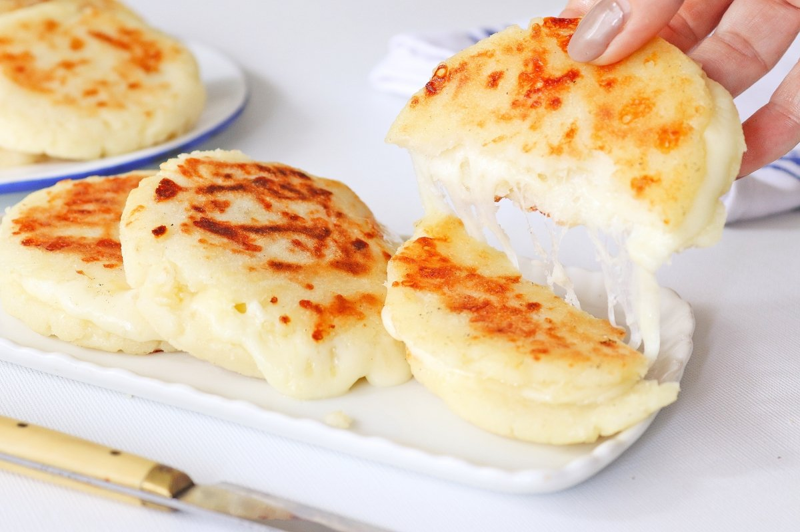

Cheese arepas

Description
Arepas are a Colombian food staple, they're made mostly out of corn and can be found in every corner of the Country.
Cheese filled arepas are one of the most famous variations of the recipe.
Ingredients
- 2 cups corn flour
- 1/2 cups of crumbled fresh cheese
- 1 cup of water
- 1 teaspoon vegetable oil
- Salt
- 1/2 pound grated mozarella
- 2 teasponns butters
Steps
- Preheat pan at medium heat. Combine corn flour, crumbled cheese,
water, and vegetable oil in a medium bowl and knead with hands until a dough is formed. Take a small amount and flatten it between your palms.
If the edges crack, knead in more water, 1 tablespoon at a time until dough is supple and smooth but not sticky. Season dough to taste with salt,
then cover and set aside for 5 minutes.
- Divide dough into 8 even pieces and roll into balls. Working on a wooden cutting board or a regular cutting board with a sheet of plastic wrap
or parchment paper on top of it, flatten each ball down to a disk about 5 inches in diameter and 1/4-inch thick.
- Place 1/4 of cheese into center of one disk, leaving a 1/2-inch gap all around.
- Place a second disk on top and carefully seal the edges all around, trying to remove as much air from the center as possible.
- Use one hand to shape the edges of the arepa so that it is an even round disk.
- Melt butter in a 12-inch cast iron or non-stick skillet over medium-low heat. Add arepas and cook, moving them around the pan and rotating them occasionally,
until first side is charred in spots and a dry crust has formed, about 5 minutes. Flip arepas and cook on second side until a dry crust has formed,
about 5 minutes longer. Transfer to a baking sheet and place in oven until heated through and cheese is melted, about 10 minutes. Serve immediately.